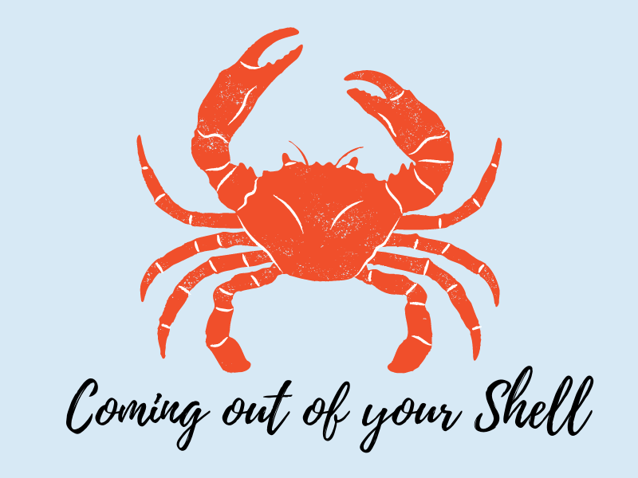
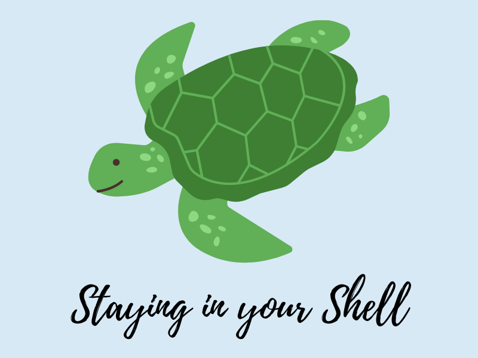

Welcome! This is the Shell Station that helps you come out of your shell while providing opportunities to make the most of your comfort zone. Coming out of your Shell is the section that allows you to define your goals of getting out of your comfort zone and providing personally-customized ranges of difficulty according to user input. For the sake of enhancing productivity and ensuring maximum comfort, you are given a personalized time limit for you to complete your goal. When you complete your goal, you are rewarded 1 point for easy level, 2 points for medium level, and 3 points for hard level. At the end, you are given a space to reflect on your experiences which is extremely useful for future experiences in getting out of your comfort zone! Staying in the Shell is the section that is the "recharging station." This is where you are able to use the points that you earn to "recharge" and become comfortable enough to get out of your comfort zone again! For every point used, you are able to receive 30 minutes to maximize your comfort within your comfort zone. For the sake of ensuring a productive your experience, you will be striving to meet a personal goal within the given "break" to make the most of your comfort zone. If you wish to get out of your comfort zone or make the most of staying in it, but don't know how, Shell Station can provide some ideas through our built in randomized generator! Please enjoy our wide selection of fish puns as well!

